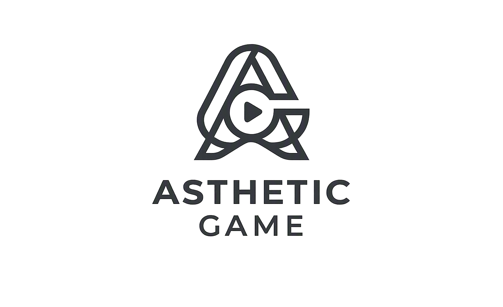

Olvasd be a kártyát
A telefon kamerájával ráirányítasz a kártyán lévő QR-kódra. A játék felismeri, melyik dal következik.
Kétféleképpen játszhatjátok: kártyákkal és a fizikai gombbal, vagy Kvízcsatában — szoba, négy válasz, és a gyorsabb kap több pontot.

Hogyan működik
Nem kell hozzá se applikáció-telepítés, se regisztráció — elég egy böngésző és a kártyapakli.
A telefon kamerájával ráirányítasz a kártyán lévő QR-kódra. A játék felismeri, melyik dal következik.
A dal a 45. másodperctől indul — ott, ahol már felismerhető —, és pontosan 30 másodpercig szól. A képet elrejtjük, hogy ne árulja el a megfejtést.
A fizikai Bluetooth-gomb egyetlen ütésre megállítja a zenét. Aki elsőként ér oda, az tippelhet.
Játékmódok
Ugyanazokkal a kártyákkal négy teljesen más játékot játszhattok — a nyugodt idővonal-építéstől a fejvesztett buzzerezésig.
Építsd fel elsőként a 10+1 kártyás, évszám szerint helyes idővonalat. Cím, előadó és évszám — minden találat korongot ér.
SzabályokA buzzer az asztal közepén. Nem kell kivárni a 30 másodpercet: aki elsőként csap rá a gombra, azé a szó — de a hibás tipp kizár a körből.
SzabályokEgyvalaki fülhallgatóval hallgatja a dalt, és dúdolva adja át a csapatának. Szavak és mutogatás szigorúan tilos.
SzabályokRubik-dobókocka dönti el a színt, mindenki titokban írja a tippjét. Öt X egy vonalban, és jöhet a „BINGO!" kiáltás.
SzabályokGyakori kérdések
Igen. A dalok a YouTube-ról szólnak, ezért a játék internetkapcsolatot igényel. Sávszélességből viszont keveset eszik, egy mobilnet is bőven elég hozzá.
Nem. A gomb a Villám-Rablás módban adja meg az igazi hangulatot, de minden játékmód végigjátszható a képernyőn lévő Szünet gombbal — vagy a szóköz billentyűvel — is.
Mert a kép azonnal elárulná a dalt. Ezért alapból letakarjuk, és csak a hang megy. Ha mégis látni szeretnétek — például a megfejtés után —, a „Videó felfedése” gombbal egy pillanat alatt előhívható.
A fizikai gomb Web Bluetooth-on keresztül kapcsolódik, amit a Chrome és az Edge támogat asztali gépen és Androidon. iPhone-on és Safariban ez a technológia nem érhető el, ott a képernyős gombot érdemes használni.
A játékban van egy „Link beillesztése” lehetőség: ide bemásolhatod a kártyához tartozó YouTube-linket, és ugyanúgy elindul a 30 másodperces részlet.
Kettőtől nagyjából tizenkettőig. A csapatmódokhoz érdemes legalább négyen lenni, a Bingo pedig annál jobb, minél többen ülnek az asztal körül.
Nincs telepítés, nincs regisztráció. Nyisd meg a játékot, olvasd be az első kártyát, és már szól is.
Játék indítása